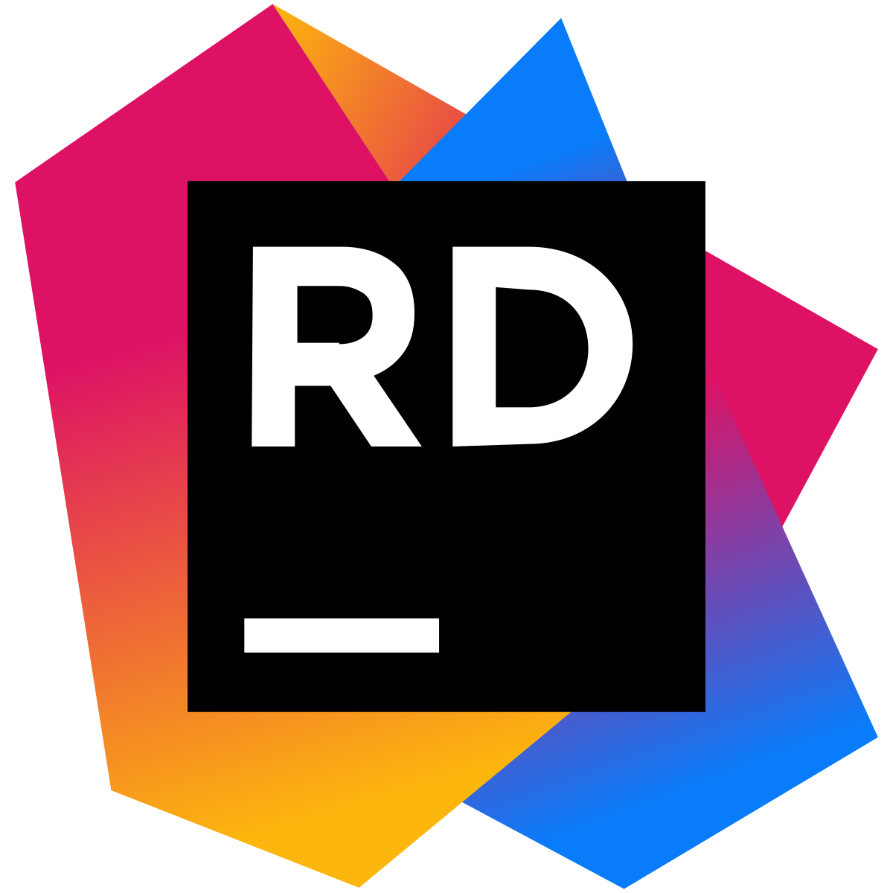
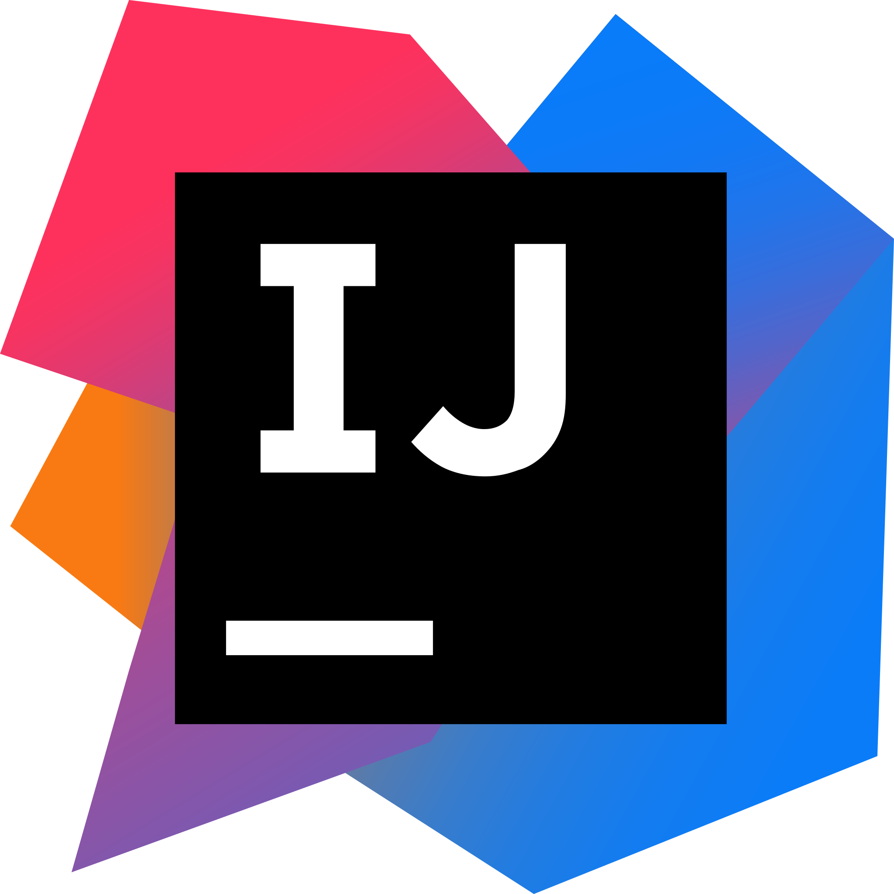
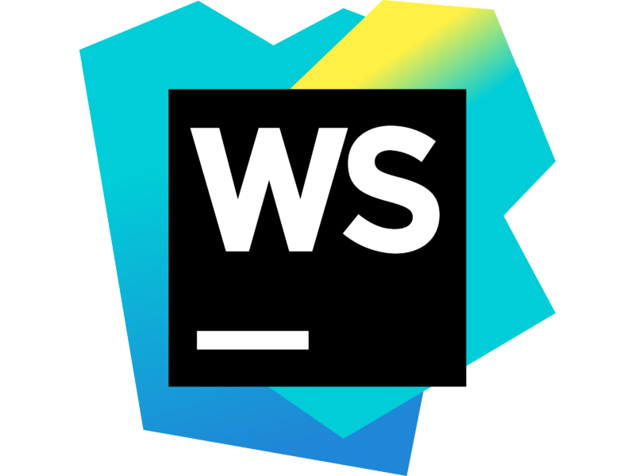

ATOUTS
Voici une compilation des divers langages de programmation, environnements et plateformes sur lesquels j'ai acquis de l'expérience au fil de ma formation et de mon parcours :



Voici une compilation des divers langages de programmation, environnements et plateformes sur lesquels j'ai acquis de l'expérience au fil de ma formation et de mon parcours :



2022-2025 | Université du Québec à Trois-Rivières (UQTR)
Actuellement étudiant en informatique, je suis à la poursuite de mon baccalauréat. Mon cheminement académique au sein de ce programme m'a offert l'opportunité d'explorer un large éventail de domaines de l'informatique, allant de la programmation à la conception de systèmes complexes. Cela m'a également permis de développer des compétences robustes, de stimuler ma créativité et de m'impliquer dans des projets captivants.
2020-2022 | Cégep de Trois-Rivières
Mon DEC en sciences informatiques et mathématiques m'a fourni des bases solides en mathématiques et en informatique, ce qui constitue un atout essentiel dans mon parcours académique et professionnel. Ces connaissances ont renforcé ma capacité à résoudre des problèmes complexes, à analyser des données, et ont constitué une base solide pour la poursuite de mon baccalauréat en informatique à l'UQTR.
2019-2024
Travailler pendant plus de quatre ans dans une pharmacie a été une expérience transformative pour moi. Au-delà des interactions avec les patients, j'ai acquis des compétences essentielles pour le monde de l'informatique. La gestion des médicaments et des dossiers a renforcé mon sens de l'organisation, une qualité précieuse pour la programmation et le développement de logiciels. De plus, j'ai perfectionné ma capacité à communiquer efficacement, que ce soit avec des collègues ou des clients, ce qui est indispensable lors de la collaboration sur des projets informatiques en équipe. En somme, ces quatre années dans le secteur pharmaceutique m'ont inculqué des compétences et une mentalité qui sont des atouts indéniables dans ma carrière dans l'informatique.